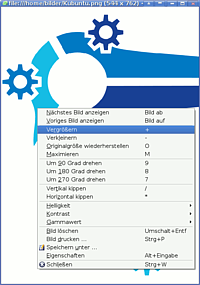

Kuickshow
Archivierte Anleitung
Dieser Artikel wurde archiviert, da er - oder Teile daraus - nur noch unter einer älteren Ubuntu-Version nutzbar ist. Diese Anleitung wird vom Wiki-Team weder auf Richtigkeit überprüft noch anderweitig gepflegt. Zusätzlich wurde der Artikel für weitere Änderungen gesperrt.
Anmerkung: Ab Ubuntu 8.10 nicht mehr verfügbar. Mit Gwenview steht aber eine Alternative zur Verfügung.
Zum Verständnis dieses Artikels sind folgende Seiten hilfreich:
KuickShow  ist ein Bildbrowser/Bildbetrachter für KDE mit einem einfachen Dateibrowser, Slideshow-Funktion und einer breiten Unterstützung von Bildformaten. Es ist besonders als Standardbetrachter für Bilddateien im Dateibrowser (Konqueror, Dolphin) geeignet wegen der sehr hohen Geschwindigkeit des Programmes, weil das Bild größtmöglich am Bildschirm dargestellt wird und weil es alle für eine Bildbetrachtung nötigen Funktionen einfach zugänglich macht.
ist ein Bildbrowser/Bildbetrachter für KDE mit einem einfachen Dateibrowser, Slideshow-Funktion und einer breiten Unterstützung von Bildformaten. Es ist besonders als Standardbetrachter für Bilddateien im Dateibrowser (Konqueror, Dolphin) geeignet wegen der sehr hohen Geschwindigkeit des Programmes, weil das Bild größtmöglich am Bildschirm dargestellt wird und weil es alle für eine Bildbetrachtung nötigen Funktionen einfach zugänglich macht.
Ein paar Merkmale:
Extrem ressourcenschonend und schnell mit geringem Speicherverbrauch
Funktionen beschränken sich auf die Aufgabe des Betrachtens von Bildern
keine platzraubenden Schaltflächen
Sehr zeitsparender Umgang durch Tastaturbedienung möglich (aber nicht zwingend)
Teil der KDE-Suite
Installation¶
Folgendes Paket muss aus den Paketquellen installiert [1] werden:
kuickshow (universe - Nur bis Hardy in den Paketquellen enthalten)
 mit apturl
mit apturl
Paketliste zum Kopieren:
sudo apt-get install kuickshow
sudo aptitude install kuickshow
Benutzung¶
Bildbrowser¶
Der Bildbrowser wird aufgerufen, wenn man KuickShow allein startet, ohne ein Bild zu öffnen. Er sieht auf den ersten Blick wie ein gewönlicher Dateibrowser aus, ist allerdings sehr viel schlanker und bietet spezifische Funktionen:
Es werden nur Bilddateien angezeigt (Liete ist unter "Einstellungen" editierbar)
Ordner und Dateien können getrennt dargestellt werden (Ansicht → Ordner separat)
Kuickshow Einstellungen können vorgenommen werden
Man kann eine Diashow starten
Man kann eine Bildvorschau mit dem Bildbetrachter (siehe unten) aufrufen
Bildbetrachter¶
 Der Bildbetrachter ist ein schaltflächenfreies Fenster, das sich sich an die Bildgröße anpasst. Es erscheint, wenn man im Bildbrowser von KuickShow ein Bild anklickt, und kann mit Esc wieder geschlossen werden. Mit einem Rechtsklick öffnet sich das Kontextmenü, in dem folgende Operationen ausführen kann:
Zwischen den Bildern eines Verzeichnisses wechseln
Zoom, Originalgröße, Größe anpassen
Drehen, spiegeln
Helligkeit, Kontrast, Gammawert ändern
Bild löschen, drucken
Änderungen in ein neues Bild speichern
Bild-Eigenschaften
Schließen
Kuickshow als Standard-Bildbetrachter¶
Unter KDE wird KuickShow normalerweise mit der Installation bereits als Standardapplikation zum Öffnen von Bilddateien festgelegt. Sollte dies nicht der Fall sein, kann man dies im Kontextmenü (Also einen Rechtsklick auf eine Bild-Datei) unter "Öffnen mit -> Sonstige..." einstellen, indem man in die obere Zeile kuickshow schreibt und das Kästchen "Programm diesem Dateityp fest zuordnen" aktiviert.
Hilfe¶
Das Programm verfügt über eine deutschsprachige Hilfe, welche die einzelnen Funktionen des Programms gut erklärt. Die Hilfe wird mit F1 aufgerufen.
- Erstellt mit Inyoka
-
 2004 – 2017 ubuntuusers.de • Einige Rechte vorbehalten
2004 – 2017 ubuntuusers.de • Einige Rechte vorbehalten
Lizenz • Kontakt • Datenschutz • Impressum • Serverstatus -
Serverhousing gespendet von